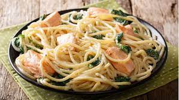

Recetas de Pasta



Espaguetis
Espaguetis con gambas| Ingredientes | |
|---|---|
| Para 2 personas | |
| 200g Pasta | 150g gambas |
| Sal | Ajo |
- Preparamos las gambas retirando las cabezas y pelando el cuerpo
- preparamos un caldo corto que podemos usar para cocer en él la pasta
- doramos los dientes de ajo fileteados y la guindilla en abundante aceite de oliva virgen extra. Cuando el ajo comience a dorarse, añadimos los cuerpos de las gambas, apagamos el fuego y tapamos con un plato para que las gambas se hagan en su propio vapor sobre el aceite caliente.
- Cocemos la pasta
- Una vez tengamos la pasta al dente, la pasamos al bol o fuente en la que la vayamos a servir y añadimos las gambas al ajillo
Lasaña de carne
Bien jugosa y sabrosa sin mucho trabajo
| Ingredientes | |
|---|---|
| Para 2 personas | |
| Hojas de pasta | Tomate frito |
| Oregano | Bechamel |
| 500g carne picada | 10 lonchas de jamon york |
- Calentamos una cazuela grande de agua Cuando empiece a hervir echamos 2 puñados generosos de sal.
- Introducimos las láminas de lasaña una a una sin que se toquen.
- En unos 10 minutos sacamos las láminas. Las estiramos encima de unas hojas de papel absorbente de cocina.
- Las verduras las cortamos en trocitos pequeños para que se junten bien en la salsa.
- En otra cazuela echamos aceite de oliva virgen extra. Empezamos introduciendo pochando la cebolla y el ajo, cuando esté doradita, añadimos el resto de ingredientes.
- Sofreímos todo a temperatura media durante unos 15 minutos y esperamos por la carne. Salpimentamos la carne al gusto y la echamos a la cazuela con la verdura. Dejamos que se pase durante 5 minutos y cuando veamos que va cambiando de color introducimos el bacon o panceta en trozos muy pequeños.
- Añadimos un vaso de tomate natural, echamos la cucharadita de orégano y rectificamos de sal y pimienta. Removemos la carne con las verduras y retiramos del fuego, dejamos enfriar un poco.
- Precalentamos el horno a 200º C durante 15 minutos, lo justo para hacer el resto de la lasaña.
Macarrones con chorizo
Increibles macarrones con chorizo
| Ingredientes | |
|---|---|
| Para 2 personas | |
| 300g macarrones | Chorizo |
| Jamon | ·Tomate frito |
| Cebolla | Oregano |
- Empezamos cociendo los macarrones en abundante agua salada siguiendo las indicaciones del paquete, procurando dejarla al dente.
- Escurrir bien y reservar en una fuente o en una bandeja. Picar la cebolla, los dientes de ajo, el puerro, el pimiento y la guindilla sin semillas. Precalentar el horno a 200ºC.
- Calentar un poco de aceite en una sartén o cazuela y pochar un pco la cbeolla con los ajos. Agregar el resto de vegetales y cocinar a fuego medio hasta que cojan color. Incorporar el tomate seco picado, el tomate en conserva escurrido, el laurel y un poco de sal y azúcar. Remover bien y cocinar a fuego medio unos 10 minutos.
- Triturar la salsa retirando el laurel y reservar. Picar el chorizo retirando la piel o cortar en trozos no muy grandes y dorar en la misma sartén.
- Añadir la salsa de tomate y los macarrones y cocinar el conjunto un par de minutos.
- Trasladar a una fuente de horno, añadir el queso y gratinar hasta que se dore al gusto. Servir con pimienta negra recién molida y un poco de albahaca fresca, si tenemos.
Pizza
Pizza al estilo italiano| Ingredientes | |
|---|---|
| Para 2 personas | |
| Harina | Agua |
| Levadura fresca | Tomate frito |
| Queso mozarella | Jamon york |
- Ponemos en una amasadora o un bol la harina, el aceite, la levadura deshecha, la sal, el azúcar y por último el agua caliente, mezclar hasta que quede una masa homogénea. Tapar y dejar reposar 30 minutos
- Vamos a extender la masa, para ello, ponemos un poco de aceite sobre el papel sulfurizado (papel especial de horno) y con la ayuda de un rodillo le damos la forma deseada.
- La ponemos en la bandeja del horno
- Extendemos tomate frito, espolvoreamos orégano, la mozarrella rallada, trocitos de jamón cocido y mozarella
- Hornear a 225º unos 20- 25 minutos o hasta que esté ligeramente dorada y el queso se haya fundido.